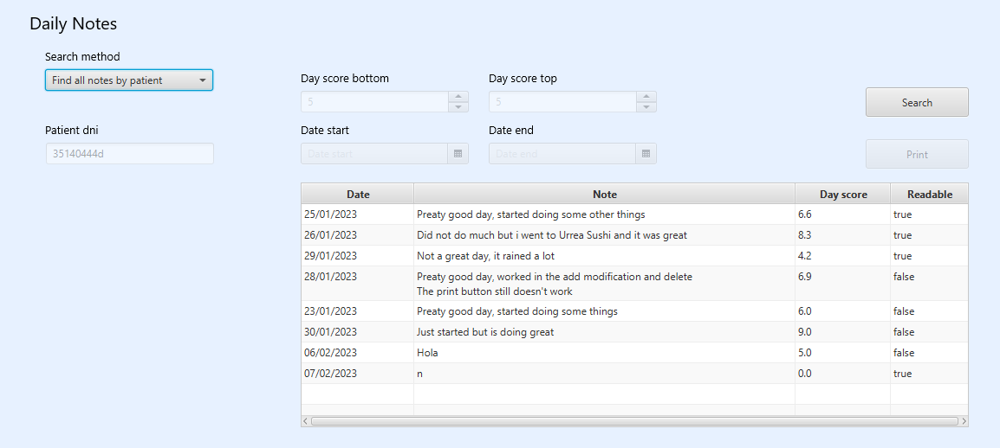
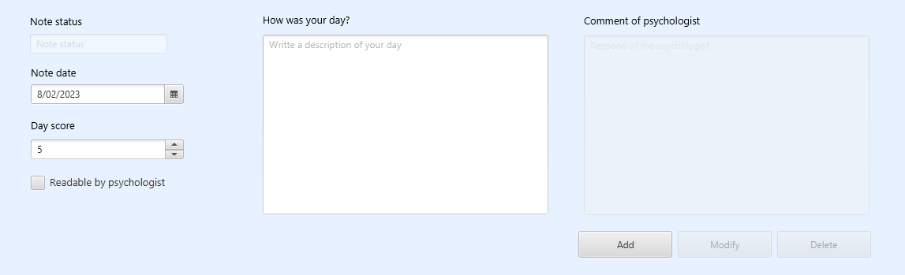

This window allows a patient to perform simple operations with notes. The patient will be able to create, read, update, and delete notes from the application. There is also an option to generate a review of the notes shown on the table
To search a daily note you will need to focus on the top part of the window
Frist select a search method, Find all notes by patient will be selected but can be changed. When selecting Find note by date the Date start field will enable and it will need to be filled, when selecting Find all patient notes between dates the Date start and Date start fields will enable, when selecting Find all patient notes between day scores the Day score bottom and Day score top fields will enable. All the other methods dont need any field to be filled. In order to activate the search button the requested fields will have to be filled it will need to be filled in order to activate. Once the actions mentioned above are finished, click on the Search button. If there is no error the daily notes will apear on the table shown in the window.
Create daily notesTo create a daily note you will need to focus on the bottom part of the window
The Note Date will already have inserted that days date, after that you should insert that days score as a number between 1 and 10 in the Day score field, works with decimals as well, if the score is inserted manualy instead of by using the arrows, you will need to confirm the operation with an intro. Then there is an optional check called Readable by psychologist wheter you want the psychologist to be able to see that note or not, after that the How was your day? field needs to be filled, with a description of your day Once the actions mentioned above are finished, click on the Add button. If there is no error the daily note will apear on the table shown in the window.
Update daily notesTo modify the data of a note you must select a note from the table, after having made a search, and all the data of that note will be loaded in the same fields as the creation of the notes, those same fields can be modified, except from Note status and Comment of psychologist. Once the fields are modified, you must press the Modify button, if no errors are shown the modifications will apear in the table above.
Delete daily notesTo modify the data of a note you must select a note from the table, after having made a search, then press the Delete, this action will ask for a confirmation If you confirm the deletion and no error is shown, the table will be refreshed.
Print daily notesPressing the Print button will pop up a document showing the notes on the table. You can print or store the report using the buttons at the top of the window.
Exit the aplicationPressing on your user dni on the manu bar and then pressing log out.
HelpPressing on Help on the manu bar and then pressing Help Daily Notes.